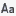
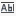

Terme recherché
Saisissez ici la chaîne de caractères à chercher ou ouvrez le multi-choix pour sélectionner une chaîne dans la liste des précédentes recherches. Les espaces saisis sont significatifs.
Remarque : Vous disposez d'une boîte de saisie et de sélection équivalente au centre de la barre d'outils de l'éditeur.
Terme de remplacement
Saisissez ici la chaîne de caractères de remplacement ou ouvrez le multi-choix pour sélectionner une chaîne dans la liste des remplacements précédents. Les espaces saisis sont significatifs. Cette chaîne peut être vide.
Si cette boîte n'est pas présente, tapez Ctrl+H ou cliquez sur la flèche "Activer ou désactiver le mode remplacement" affichée à droite de la boîte "Terme recherché".
Respecter la casse
(bouton

)Considérons une portion de texte correspondant exactement à la chaîne ou au mot indiqué (attention, les espaces sont significatifs). Si vous cochez cette case, les caractères de la portion de texte doivent être de même casse que les caractères correspondants de la chaîne pour que le résultat de la recherche soit positif.
Si vous ne cochez pas cette case, la recherche ne différencie pas minuscules et majuscules lors des comparaisons.
Mot complet
(bouton

)Considérons une portion de texte correspondant exactement à la chaîne indiquée (attention, les espaces sont significatifs). Si vous cochez cette case, la portion de texte doit être précédée et suivie d'un symbole autre qu'une lettre, un chiffre ou le caractère "Underscore" pour être sélectionnée.
Si vous ne cochez pas cette case, toute portion de texte correspondant à la chaîne indiquée sera sélectionnée et ce, quelques soient les caractères la précédant ou la suivant.
Occurrence suivante, précédente
(boutons  ,
, )
)
Lance une recherche (vers l'avant ou vers l'arrière).
L'éditeur analyse le fichier de manière circulaire. En recherche vers l'arrière, la recherche reprend automatiquement à la fin du fichier si le début du fichier est atteint. En recherche vers l'avant, elle reprend automatiquement au début du fichier si la fin du fichier est atteinte. Un temps d'arrêt a lieu lorsqu'une boucle complète a été effectuée (message en barre d'état "Le début de la recherche est atteint").
Rechercher toutes les lignes
(bouton )
Ce bouton permet de lister toutes les occurrences de la chaîne recherchée présentes dans le source actif. Les occurrences sont placées dans la liste affichée dans l'onglet Recherche.
Pour ensuite parcourir la liste des occurrences, validez le choix Erreur/Occurrence Suivante (raccourci clavier : F4) ou le choix Erreur/Occurrence Précédente (raccourci clavier : Maj+F4) du menu Rechercher (l'onglet Recherche ayant été préalablement sélectionné).
Vous pouvez aussi vous positionner directement sur une occurrence précise en tapant Entrée après avoir sélectionné la ligne voulue dans la fenêtre Recherche ou en double cliquant sur cette ligne.
Rechercher et marquer toutes les lignes
(bouton )
Comme le bouton précédent, ce bouton liste toutes les occurrences de la chaîne recherchée présentes dans le source actif et placent ces occurrences dans la liste affichée dans l'onglet Recherche.
De plus, une marque est positionnée sur toutes les lignes concernées.
(Remplacer, chercher l'occurrence suivante
(bouton )
Lance une recherche (si la chaîne recherchée n'est pas déjà sélectionnée dans le source) ou remplace la chaîne recherchée (si elle est déjà sélectionnée dans le source). Dans les deux cas, l'éditeur recherche l'occurrence suivante et la sélectionne si elle existe.
Utilisez le bouton  pour ignorer la chaîne couramment sélectionnée et passer à l'occurrence suivante.
pour ignorer la chaîne couramment sélectionnée et passer à l'occurrence suivante.
L'éditeur analyse le fichier de manière circulaire. La recherche reprend automatiquement au début du fichier si la fin du fichier est atteinte. Un temps d'arrêt a lieu lorsqu'une boucle complète a été effectuée (message en barre d'état "Aucune autre occurrence").
Si ce bouton est inactif (grisé), tapez Ctrl+H ou cliquez sur la flèche "Activer ou désactiver le mode remplacement" affichée à droite de la boîte "Terme recherché".
Remplacer tout
(bouton )
Procède au remplacement de toutes les occurrences de la chaîne trouvées dans le texte (sans demande de confirmation occurrence par occurrence). Le nombre d'occurrences remplacées est affiché en barre d'état.
Si ce bouton est inactif (grisé), tapez Ctrl+H ou cliquez sur la flèche "Activer ou désactiver le mode remplacement" affichée à droite de la boîte "Terme recherché".
Aide
(bouton )
Affiche la présente rubrique d'aide.
Activer / désactiver le mode remplacement
(bouton )
Active (raccourci clavier : Ctrl+H) ou désactive (raccourci clavier : Ctrl+F) les fonctions de remplacement.